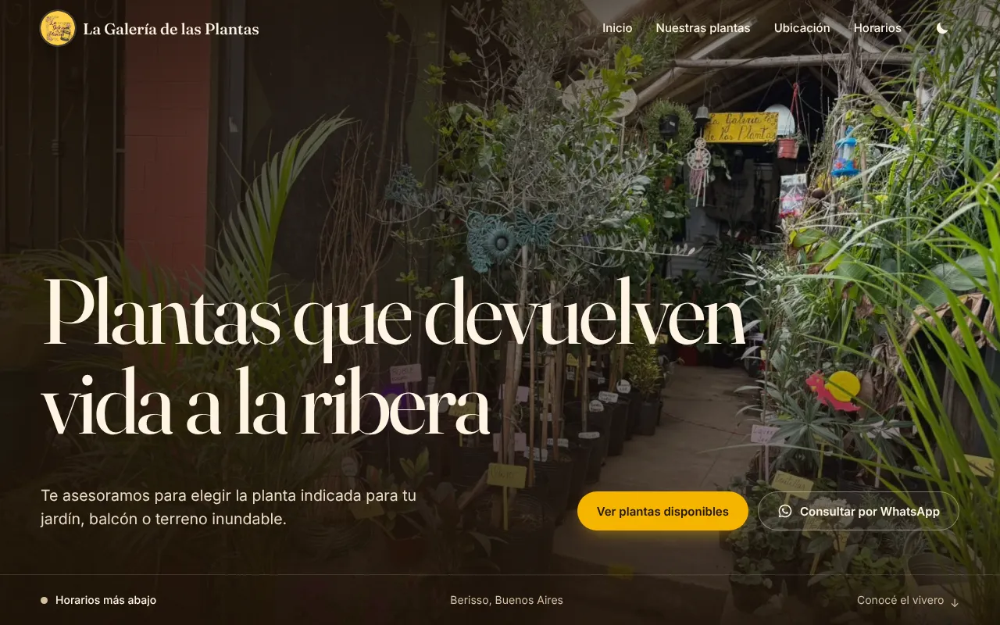

Proyecto principal · Online
La Galería de las Plantas
Sitio web completo para un vivero real de Berisso. Los clientes ven el catálogo con el stock actualizado, buscan y filtran plantas, saben si el vivero está abierto ahora y consultan por WhatsApp.
- Panel de administración con login: el dueño carga plantas, fotos, stock, textos y horarios sin tocar código.
- Base de datos en Supabase (PostgreSQL) con permisos por fila para que solo el dueño pueda modificar.
- Rápido y seguro: imágenes WebP en dos tamaños, cabeceras de seguridad (CSP) y SEO básico.